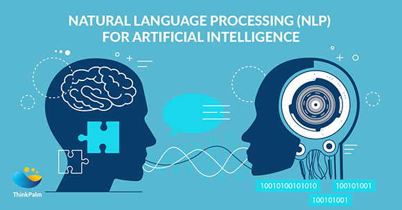

Automated Scriptwriter:
GhostWriter
Helping overcome writing obstacles

Problem
Films and TV shows are being produced at a very high rate,
especially with new streaming services such as Netflix creating their own special
productions. With high production of shows and movies, companies have to hire more
and more humans to write. However, humans are prone
to inconsistencies and can
easily become a victim of writer’s block due to the sheer amount of output
they need to produce. What if artificial intelligence could help writer’s with a
creative spark and help overcome difficulties within writing? GhostWriter can be
a very useful tool
to help alleviate writer’s block by generating plots that the
writer may have never thought of and give specific feedback to bring the best of
their previous scripts.
My Role
Throughout the course of the project, I delegated task between team members between designing and finding the correct frameworks to help accomplish our goal.


Length of project
September 2019 - December 2019
Tools used
Python | IBM Tone Analyzer | Unix
Approach
The main goal we wanted to address in our automated script writer for the automated script to maintain a sense of continuity within the
context but also have an emotional arch.
In order to target automated script writing, we:
1. took a set of raw script files from the Internet Movie Script Database (IMSDb)
2. took each script file and ran it through the parser
3. feed parsed lines into the sentiment analysis tool
4. sentiment analyzer then labelled each line as one of four emotions: anger, sadness, fear, or joy
After having labelled each line of our scripts with an emotion, we could finally train our model to generate script. The model we used was OpenAI’s GPT-2, a text generating AI used to develop new scripts based on user’s input.
For our specific goal, we first trained 4 different models (one for each emotion) by feeding it the respective dataset e.g. all lines labelled as
‘anger’ were used to train the ‘anger’ model. After following this process for each
emotion model, we created a story arch. The story arch:
1. takes a user input and feeds it through one emotion model e.g. sad
2. the last line generated in the sad model is passed into the next emotion model such as angry
3. last line from one emotion model is passed onto the next model until the final output
Architecture
As the diagram displays:
1. the user first inputs a text line which is then plotted into the story arch
2. then passed into the driver program which directly passes it into the first emotional model and receives the last line generated within that emotional model
3. The driver program follows these steps by passing it into the next emotional model until the final output which is the automated final script
Demo
In order to test how effective our automated script writer was,
we first took the user input and ran it through a model that was
not trained
on sentiment analysis. We also took the user input
and ran it through the model trained through the sentiment analysis
as described in the
approach section above. As one can see, the model
without sentiment analysis training (left) had a very basic and bland output
with lack of emotion in the characters’ dialogue. However, the model
trained on emotions (right) shows the transitions within the emotional story arch.
This text contains clear differences in emotions as the story progresses
and the script is much more flavorful!